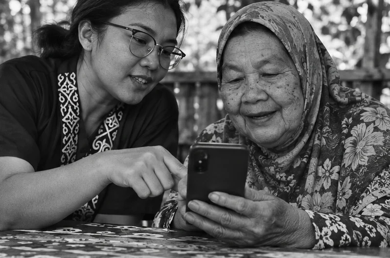
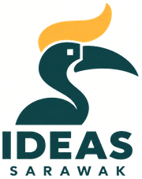
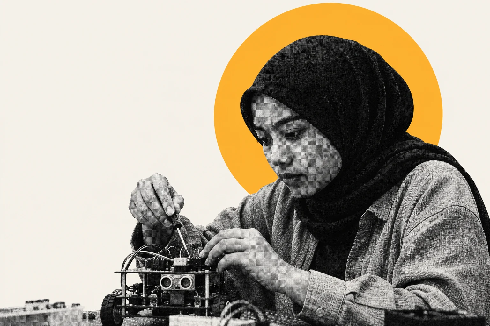
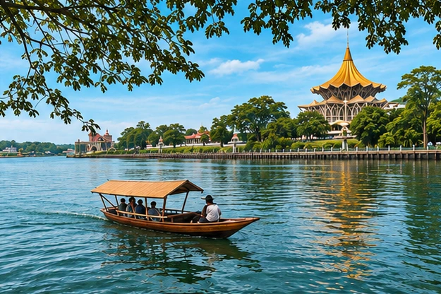
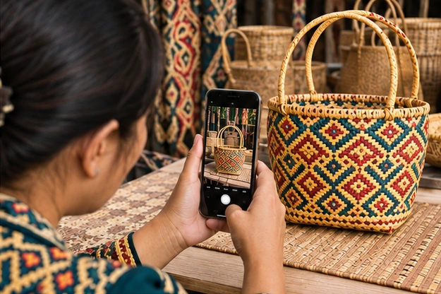
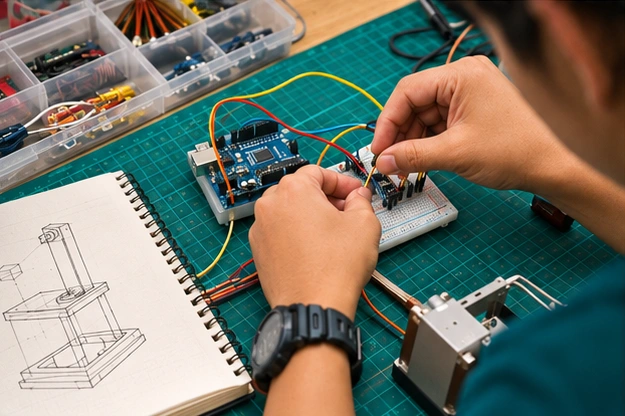

Literasi digital
Bijak guna telefon Buat panggilan video dan urus gambar pada telefon sendiri.
Anda juga akan belajar mengenali tanda-tanda penipuan dalam mesej yang diterima.
Cadangkan bengkel ini
Persatuan Inovasi danBelajar guna teknologi untuk berniaga, mencipta dan berkongsi ilmu di Sarawak.
Terokai program
Kami menghimpunkan komuniti di Sarawak untuk belajar kemahiran digital, mengembangkan perniagaan kecil dan mencuba idea baharu.

Pilih bengkel yang ingin anda cadangkan untuk komuniti anda.

Literasi digital
Anda juga akan belajar mengenali tanda-tanda penipuan dalam mesej yang diterima.
Cadangkan bengkel ini
Keusahawanan
Tulis penerangan ringkas untuk membantu pelanggan mengenali produk yang ditawarkan.
Cadangkan bengkel ini
Reka cipta
Kenali fungsi setiap komponen bersama pembimbing sebelum menguji idea sendiri.
Cadangkan bengkel iniMembimbing warga pelbagai usia menggunakan teknologi harian dengan yakin dan selamat.
Lihat poster literasi digitalMembantu usahawan kecil mengambil gambar produk, membina katalog dan mengurus tempahan dalam talian.
Lihat poster keusahawananMenghubungkan penduduk, belia dan pembimbing untuk menguji idea yang menjawab keperluan setempat.
Lihat poster inovasi komunitiCadangkan bengkel atau projek digital untuk komuniti anda.
E-mel cadangan anda